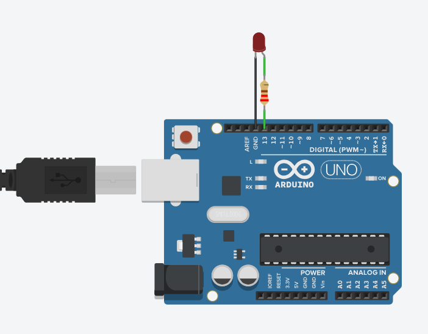
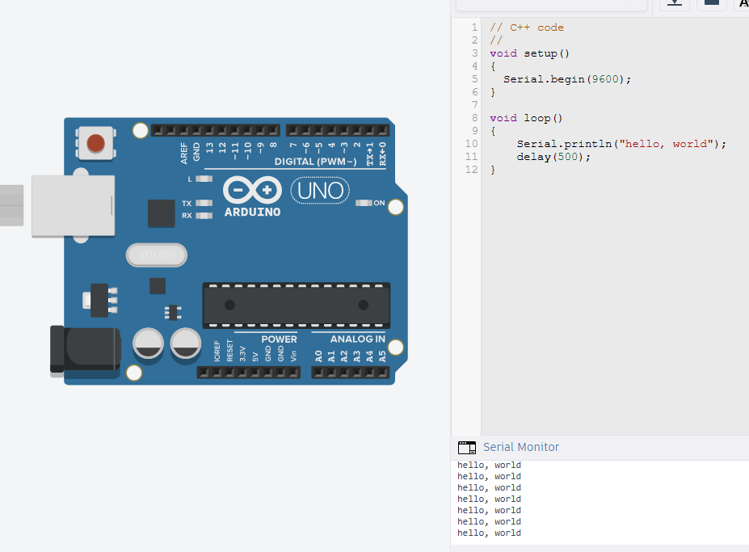
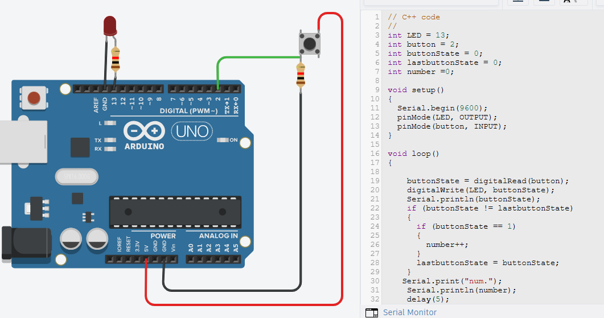
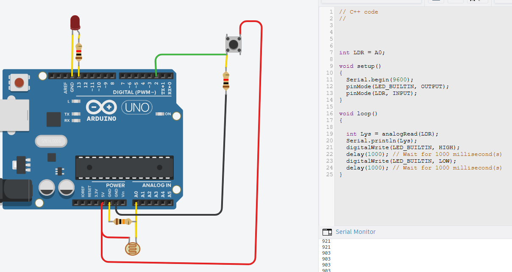
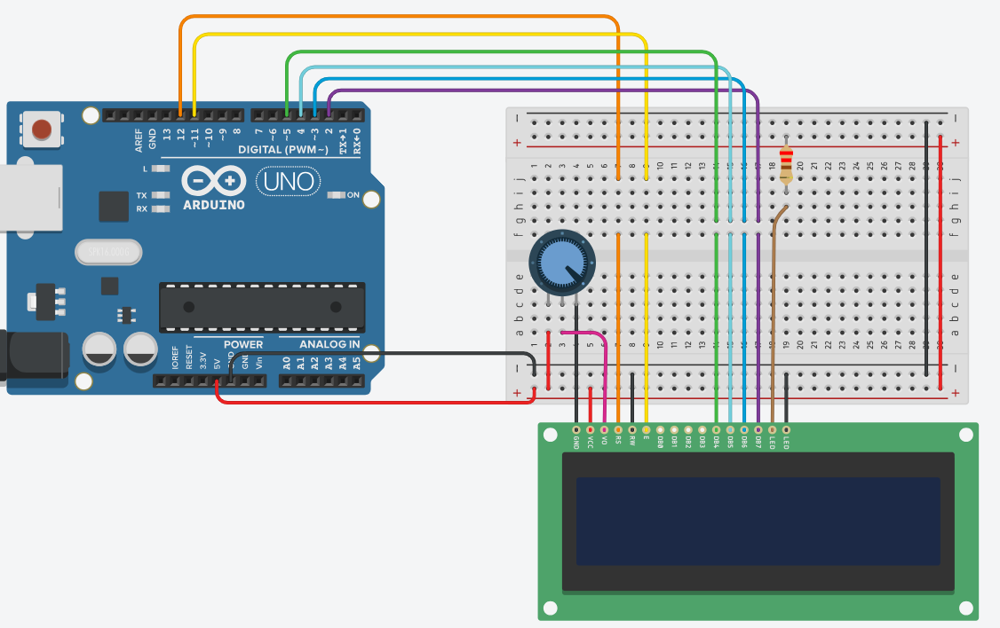
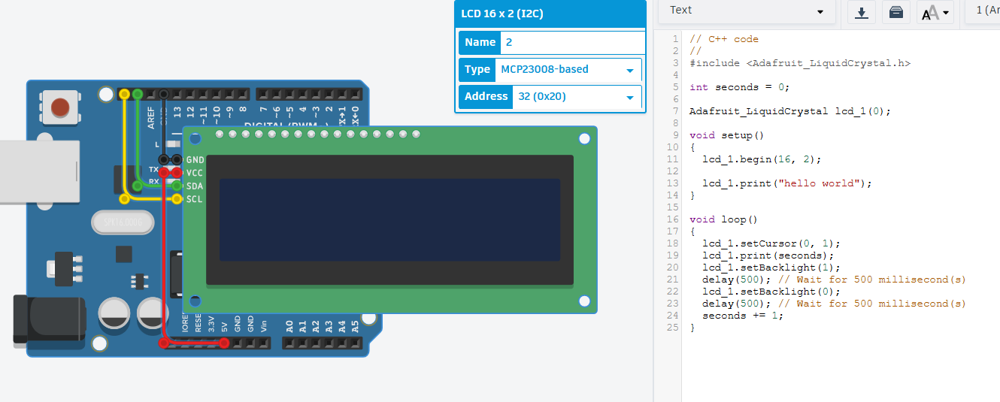

Om dette dokument
Et forsøg på at facillitere forbedring af jeres Arduino programmeringskompetencer.

Projekter og opgaver
Her samles de projekter og opgaver, som I skal arbejde med.
Opgave 1
Opgaven
Blink og SOS
Lidt mere om opgave
Opgaven går ud på at få en LED til at blinke i et bestemt mønster. Først skal du få LED'en til at blinke med et fast interval, og derefter skal du programmere den til at blinke SOS i morse-kode. Opgave kan løses enten i Arduino IDE eller i Tinkercad. Opgave 1a Blink leg med blink frekvens og interval. Opgave 1b SOS blink i morse-kode(spagettikode). Opgave 1c SOS blink i morse-kode med funktioner.

Eksempelkode/Hint
# Indsæt din kode her
void setup()
{
pinMode(LED_BUILTIN, OUTPUT);
}
void loop()
{
// turn the LED on (HIGH is the voltage level)
digitalWrite(LED_BUILTIN, HIGH);
delay(1000); // Wait for 1000 millisecond(s)
// turn the LED off by making the voltage LOW
digitalWrite(LED_BUILTIN, LOW);
delay(1000); // Wait for 1000 millisecond(s)
}
Links
Opgave 1.1
Opgaven
Blink uden delay
Lidt mere om opgave
Her skal I primært læse koden og forstå, hvordan den virker. I kan evt. ændre intervallet og se, hvordan det påvirker LED'ens blinkefrekvens.
Eksempelkode/Hint
# Indsæt din kode her
const int ledPin = LED_BUILTIN;
int ledState = LOW;
unsigned long previousMillis = 0;
const long interval = 1000;
void setup()
{
pinMode(ledPin, OUTPUT);
}
void loop()
{
unsigned long currentMillis = millis();
if (currentMillis - previousMillis >= interval)
{
previousMillis = currentMillis;
if (ledState == LOW)
{
ledState = HIGH;
}
else
{
ledState = LOW;
}
digitalWrite(ledPin, ledState);
}
}
Links
Opgave 1.2
Opgaven
Hello World
Lidt mere om opgave
Her skal I lære at skrive tekst til Serial Monitor. I skal bruge Serial Monitor til at se, hvad jeres Arduino sender af data. I kan starte med at sende "Hello World" og derefter eksperimentere med at sende andre beskeder. Undringsspørgsmål
- Hvad er forskellen på Serial.print() og Serial.println()?
- Hvad sker der, hvis I sender tal i stedet for tekst?
- Hvad er baud rate, og hvorfor skal den være den samme i koden og i Serial Monitor?

Eksempelkode/Hint
# Indsæt din kode her
void setup()
{
Serial.begin(9600);
}
void loop()
{
Serial.println("Hello World");
}
Links
Opgave 1.3
Opgaven
Hello World + blink
Lidt mere om opgave
Her skal I kombinere det, I har lært i de to foregående opgaver. I skal få LED'en til at blinke(bruge evt. LED_Builtin), samtidig med at Arduino sender beskeder til Serial Monitor. I kan starte med at sende "Hello World" hver gang LED'en tænder, og derefter eksperimentere med at sende andre beskeder.
- Kan du sende flere beskeder samtidig?
- Kan du få LED'en til at blinke det antal gange den har sendt en besked?
- Kan du blinke moserkode og udskrive SOS?
Eksempelkode/Hint
# Indsæt din kode her
void setup()
{
Serial.begin(9600);
pinMode("jeres Pin", OUTPUT);
}
void loop()
{
Serial.println("Hello World");
}
Links
Opgave 2.1 Digitalt Input
Opgaven
Button Input
Lidt mere om opgave
Her skal I registrere input fra en knap. I skal bruge en knap til at tænde og slukke for LED'en, samtidig med at Arduino sender beskeder til Serial Monitor. I kan starte med at sende "Button Pressed" hver gang knappen trykkes, og derefter eksperimentere med at sende andre beskeder.
- Tænd og sluk LED'en med knap
- Vælg mellem forskellige LED
- Tæl antal knaptryk

Kode Hint
# Indsæt din kode her
void setup()
{
Serial.begin(9600);
pinMode .....................;
pinMode("jeres Pin", INPUT);
}
void loop()
{
if (buttonState != lastbuttonState)
{
if (buttonState == 1)
{
number++;
}
lastbuttonState = buttonState;
}
}
Links
Opgave 2.2 Analog Input
Opgaven
Analog Input
Lidt mere om opgave
Her skal I registrere input fra en analog sensor. I skal bruge en analog sensor til at måle en værdi og sende denne værdi til Serial Monitor. I kan starte med at sende "Analog Value: [værdi]" hver gang værdien ændres, og derefter eksperimentere med at sende andre beskeder.
- Læs analog værdi og udskriv til serial monitor
- Læs analog værdi og tænd forskellige LED'er afhængigt af værdien
- Læs analog værdi og udskriv til serial monitor når knappen trykkes

Kode Hint
# Indsæt din kode her
void setup()
{
Serial.begin(9600);
pinMode .....................;
pinMode(analogPin, INPUT);
}
void loop()
{
int Lys = analogRead(LDR);
Serial.print("Lys: ");
Serial.println(Lys);
}
Links
Opgave 3.1 Liquid crystal display
Opgaven
Udskrivning til display
Lidt mere om opgave
Her skal I registrere input fra en analog sensor. I skal bruge en analog sensor til at måle en værdi og sende denne værdi til et LCD display. I kan starte med at sende "Analog Value: [værdi]" hver gang værdien ændres, og derefter eksperimentere med at sende andre beskeder.
- Læs analog værdi og udskriv til LCD display
- Læs analog værdi og tænd forskellige LED'er afhængigt af værdien
- Læs analog værdi og udskriv til LCD display når knappen trykkes

Kode eksempel fra Arduino IDE
# Indsæt din kode her
// C++ code
//
/*
LiquidCrystal Library - Hello World
The circuit:
* LCD RS pin to digital pin 12
* LCD Enable pin to digital pin 11
* LCD D4 pin to digital pin 5
* LCD D5 pin to digital pin 4
* LCD D6 pin to digital pin 3
* LCD D7 pin to digital pin 2
* LCD R/W pin to ground
* LCD VSS pin to ground
* LCD VCC pin to 5V
* 10K resistor:
* ends to +5V and ground
* wiper to LCD VO pin (pin 3)
Library originally added 18 Apr 2008 by David
A. Mellis
library modified 5 Jul 2009 by Limor Fried
(http://www.ladyada.net)
example added 9 Jul 2009 by Tom Igoe
modified 22 Nov 2010 by Tom Igoe
This example code is in the public domain.
http://www.arduino.cc/en/Tutorial/LiquidCrystal
*/
#include
int seconds = 0;
LiquidCrystal lcd_1(12, 11, 5, 4, 3, 2);
void setup()
{
lcd_1.begin(16, 2); // Set up the number of columns and rows on the LCD.
// Print a message to the LCD.
lcd_1.print("hello world!");
}
void loop()
{
// set the cursor to column 0, line 1
// (note: line 1 is the second row, since counting
// begins with 0):
lcd_1.setCursor(0, 1);
// print the number of seconds since reset:
lcd_1.print(seconds);
delay(1000); // Wait for 1000 millisecond(s)
seconds += 1;
}
Links
Opgave 3.2 Liquid crystal display med I2C
Opgaven
Udskrivning til display
Lidt mere om opgave
Samme som ovenstående opgave, men her bruger i et display med I2C interface. I skal bruge en analog sensor til at måle en værdi og sende denne værdi til et LCD display. I kan starte med at sende "Analog Value: [værdi]" hver gang værdien ændres, og derefter eksperimentere med at sende andre beskeder.
- Læs analog værdi og udskriv til LCD display
- Læs analog værdi og tænd forskellige LED'er afhængigt af værdien
- Læs analog værdi og udskriv til LCD display når knappen trykkes

Kode eksempel fra Arduino IDE
# Indsæt din kode her
// C++ code
//
#include
int seconds = 0;
Adafruit_LiquidCrystal lcd_1(0);
void setup()
{
lcd_1.begin(16, 2);
lcd_1.print("hello world");
}
void loop()
{
lcd_1.setCursor(0, 1);
lcd_1.print(seconds);
lcd_1.setBacklight(1);
delay(500); // Wait for 500 millisecond(s)
lcd_1.setBacklight(0);
delay(500); // Wait for 500 millisecond(s)
seconds += 1;
}
Links
Min refleksion
Det vigtigste, jeg har lært indtil nu, er ...
Noget jeg er blevet bedre til, er ...
Næste gang vil jeg gerne blive bedre til ...